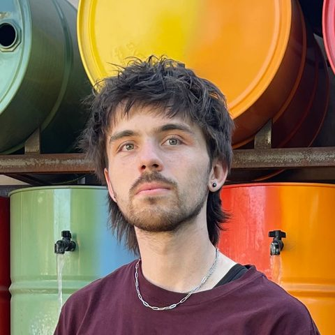

Open to data scientist and ML engineer roles · remote or relocating
I'm a data scientist from UC San Diego (B.S. Data Science, 2025) focused on statistical modeling, forecasting, and LLM pipelines. I built a day-ahead demand forecast for 2,296 Citi Bike stations from 44 million trips, built LLM digital twins at Exponential Intelligence that 5 companies adopted in a pilot, and led my team to 1st place at Purdue's national autonomous vehicle competition. Before that: risk modeling at Deloitte and climate research at Scripps on 70+ years of records. Right now I'm a cast member on TRON Lightcycle / Run at Walt Disney World. See the projects →
Education
Bachelor of Science in Data Science, University of California, San Diego, Sep 2021 – Jun 2025.
Favorite Projects
Skills
- Languages
- Python, SQL, R, JavaScript
- Statistics & ML
- Hypothesis testing, bootstrap confidence intervals, regularized regression, gradient boosting, time-series forecasting, conformal prediction, CNNs
- Libraries
- pandas, NumPy, scikit-learn, Statsmodels, XGBoost, PyTorch, Hugging Face Transformers, LangChain, D3.js
- Tools & Platforms
- AWS, Apache Spark, Docker, Git, GitHub Actions, pytest
Want a copy of my résumé? Get in touch and I’ll send it over.